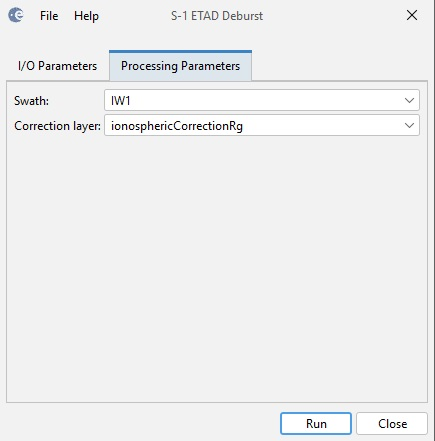

| ETAD Deburst and
Merge |
|
Since the ETAD product is created based on the SAR processing parameter information given in an input SLC product, the ETAD corrections are also provided in bursts and sub-swaths. The adjacent bursts overlap in both the azimuth and range directions. The ETAD Deburst operator merges the bursts into one image for user selected correction layer and sub-swath or all sub-swaths.

GPT operator: ETAD-Deburst. Generated from the operator source; parameter names are those used in GPT and graph XML.
| Parameter | Type | Default | Allowed values | Unit | Description |
|---|---|---|---|---|---|
selectedSwath | String | IW1 | IW1, IW2, IW3, All | Swath | |
selectedLayer | String | ionosphericCorrectionRg | troposphericCorrectionRg, ionosphericCorrectionRg, geodeticCorrectionRg, dopplerRangeShiftRg, geodeticCorrectionAz, bistaticCorrectionAz, fmMismatchCorrectionAz, sumOfCorrectionsAz, sumOfCorrectionsRg | Correction layer |